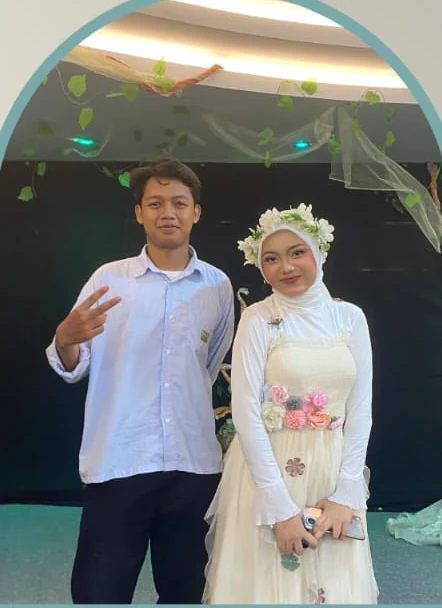

English assignment · Drama observation
Love Blooms in the Dark
Observing a stage retelling of A Midsummer Night’s Dream
This play recounts a series of magical, romantic, and comedic events set in the city of Athens and an enchanted forest. It centers on the preparations for the wedding of Duke Theseus and Hippolyta—a process marked by romantic chaos, the magical intrigues of the fairy realm, and an amateur theatrical performance staged within the enchanted woods.

What the play is about
As the wedding of Duke Theseus and Queen Hippolyta approaches, a nobleman named Egeus compels his daughter, Hermia, to marry Demetrius. However, Hermia is in love with Lysander. Refusing to obey this demand, Hermia and Lysander decide to flee into the forest. Helena, who harbors an unrequited love for Demetrius, informs him of their escape, leading both Demetrius and Helena to follow them into the forest.
Deep in the forest, the Fairy King Oberon and the Fairy Queen Titania are at odds. Oberon instructs a mischievous fairy named Puck to use the nectar of a magical flower, which causes anyone who wakes up after being anointed with it to fall in love with the first creature they see. Due to Puck’s magical interference, two young men from Athens—Lysander and Demetrius—both end up falling in love with Helena, sparking confusion, jealousy, and quarrels among the lovers. Puck also transforms the head of Nick Bottom, an amateur actor, into that of a monkey, which leads Queen Titania to wake up and fall in love with him.
Amidst the romantic chaos, a group of Athenian laborers and amateur performers—led by Peter Quince and Nick Bottom—gather to rehearse a play titled “The Most Lamentable Comedy and Most Cruel Death of Pyramus and Thisbe,” intended for performance at the wedding of Duke Theseus.
Towards the end of the story, Oberon restores order and lifts the enchantment from the humans. The lovers are reunited with their rightful partners (Lysander with Hermia, and Demetrius with Helena). The story concludes with the wedding celebration of Theseus and Hippolyta, during which Quince, Bottom, and their group perform the highly amusing play “Pyramus and Thisbe,” followed by a final message from Puck regarding the illusory nature of dreams.
Favorite and observed characters: Titania & Bottom
Among all the characters, the ones I find most compelling are Titania and Bottom. Titania leads the fairies and possesses a strong, unyielding stance—she is not at all afraid to disagree with her own husband, the Fairy King Oberon. Bottom, meanwhile, displays immense self-confidence regarding his acting abilities in the play “Pyramus and Thisbe.”
Both actors portray their roles exceptionally well, skillfully utilizing expressions, deep immersion in character, and humorous movements that keep the audience laughing and thoroughly engaged.
Favorite scene: Act 4, Scene 1
My favorite scene is when Queen Titania, under the influence of a spell, lovingly dotes on Nick Bottom—who still has the face of a monkey—in a bed of flowers, surrounded by her attendant fairies. She sings a song until, eventually, Bottom falls fast asleep in her arms. The scene was performed with such extraordinary depth and feeling that it left a profound impression on me.